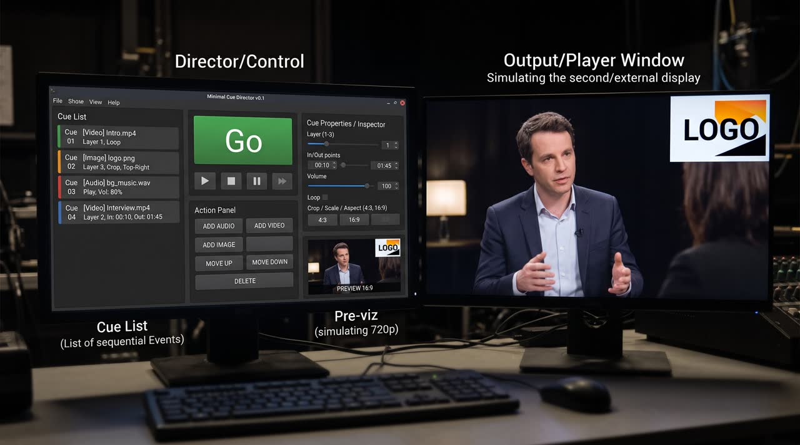
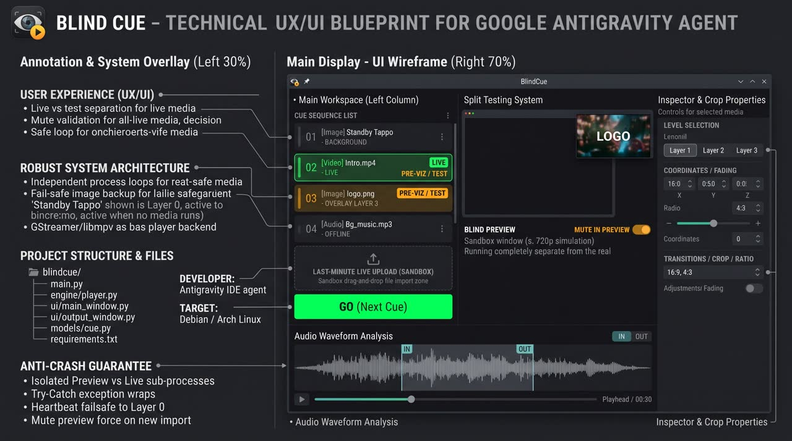

What is BlindCUE
BlindCUE lets you build a cue list of audio, video and image cues and fire them on stage with fail-safe, panic-ready controls. The audience never sees a desktop, a system window or a technical manoeuvre: the director works on one screen, the audience sees only the clean stage output on the projector.
Director console
Cue list, inspector, preview and waveform on the operator's monitor — everything needed to run a show.
Stage output
Only the live video layers, full screen, on the projector or stage display. Dual output for two independent screens.
Built for panic
Global pause, blackout and Panic keys, atomic saves, autosave and crash recovery — designed for live pressure.
A QLab alternative for Linux and Windows
QLab, the reference tool for live cueing, is macOS-only and commercial. BlindCUE is the open-source alternative for the machines QLab does not cover.
- Linux first: native Wayland and X11, PipeWire/PulseAudio, VA-API hardware video decoding.
- Also Windows and macOS: one codebase, no platform lock-in.
- Lightweight: no web runtime, no database, no external service. Python + Qt + FFmpeg.
- Open source only: no proprietary dependency, no paid API, no account, no cloud.
Features
Three projection layers
Background, main and overlay, stackable in real time. Six with two independent projectors.
Cue list
Video, audio, images and groups (scenes) with pre/post-delay, fades and auto-follow.
Groups
Simultaneous, sequential, step, random and loop — for scenes and multi-device cues.
Sections
Virtual A/B/C sections with N-time loops or infinite vamp, jump and skip.
Envelopes
Keyframed volume and opacity with logarithmic, S-curve or linear fades.
Audio routing
Separate room master and headphone PFL, EBU R128 loudness, non-destructive normalisation.
Projection mapping
Automatic projector detection, span, dual outputs, surfaces, masks and keystone.
LAN remote
Mobile-first web remote with QR + PIN, a director monitor and a native OSC server.
Failsafes
Atomic saves, autosave + crash recovery, 40-step undo/redo, dedicated CPU budget.
Screenshots


Install
One command on Linux, macOS and Windows. Installs per-user, no sudo, no UAC.
git clone https://github.com/diego-costanzo/BlindCUE.git
cd BlindCUE
python3 setup.py # opens the installer windowFull requirements, per-system commands and the Italian user guide are in the README and in docs/MANUAL.md.
Tested and transparent
Every release passes about 210 automated checks on Linux — 130 pytest tests plus
harnesses that drive the real application with real media (functional, sections, live groups,
integration, mixin fuzz). Deep testing is on Linux (Wayland/X11); codecs beyond H.264, 4K/10-bit
files and 5.1/7.1 audio are not yet verified. Before a real show, run a full dress rehearsal —
that applies to any live software.